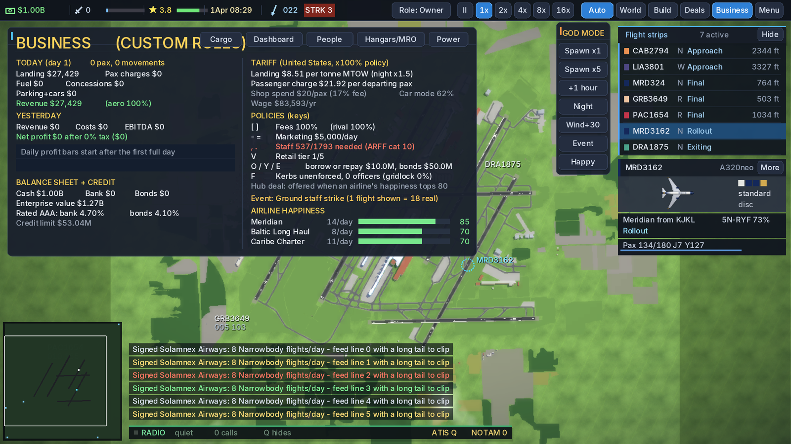
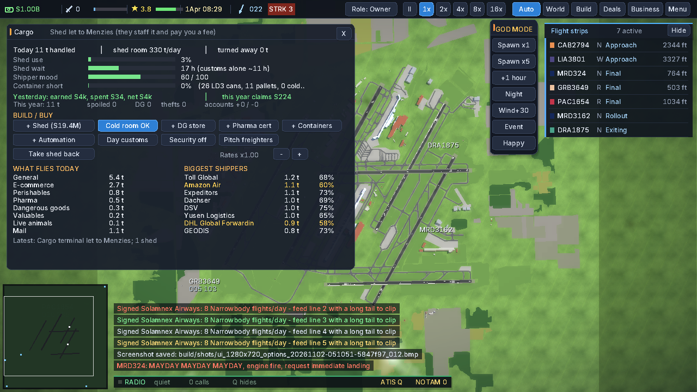
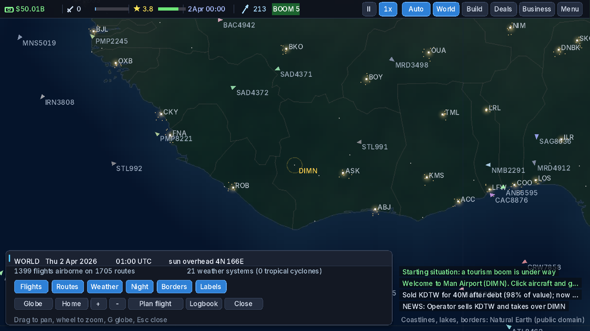

Current development-line addendum (2026-11-02)
The five-stage Development Mode workstream and the performance-baseline work package are reported complete on the development line and, as of the completed 2026-11-02 integration, are merged to the default branch — see the integration addendum below.
| Work / check | Recorded result |
|---|---|
| Development Mode — integrated F3 diagnostic overlay | State identity, invariant status, delay explanation, trace inspection, snapshot capture/compare, and step-cost display integrated on the development line. |
| Trace non-interference | Trace-on/off paired trajectories were byte-identical; a planted RNG-draw negative control was detected. |
| Diagnostic cost | Full snapshot hashing measured at about 1.95 ms, so full identity refresh is on demand. Light invariant/delay refresh measured about 10 μs at 2 Hz. |
| Integrated full gate | Exit code 2 — failed. The result remains failed in the record. Matched base/current comparisons reproduced the business-window truncation and topbar-overlap signatures, supporting attribution as pre-existing rather than a regression introduced by the diagnostic work. |
| Performance baseline | Model fitted for fixed overhead, active-aircraft count, and simulated time step. The aircraft-count coefficient remains weakly identified because world age and aircraft count are confounded in long-run windows; no optimization claim is made from the fit alone. |
The Development Mode branch's own integrated gate result above remains in the record as failed. When the branch took its first trip through the full checks during the integration, two further small defects surfaced — a Windows clock call that was not portable, and a memory leak in a test, caught by the memory-safety run; both were fixed and re-verified before the branch merged (see the integration addendum below).
Integration addendum (2026-11-02)
The merge sequence described above ran on 2026-11-02, under those rules. Results:
| Work / check | Recorded result |
|---|---|
| Final full gate (integrated tree) | Exit 0 · 162,701 simulation checks, 0 failed · 9,676 interface checks, 0 failed · end-to-end menu/swap/fuzz/load-loop pass · all four CI jobs pass on the final code · test inventory: 72 test groups. |
| Integration progress | Complete. All eleven packages merged to the default branch, each with fresh checks after its merge, then the Development Mode branch last; zero pull requests remain open. PR #8's first fresh check reproduced the documented intermittent signature (an unseeded test world) and was rerun once under the recorded rule — passed; both runs preserved. Two branch conflicts were resolved as unions and verified by full local gates before merging. |
| The intermittent failure | Root-caused to an unseeded test world and fixed for determinism: the game binary's test world is seeded in PR #13 (merged); the suite's half is PR #11 (merged as the recorded resolution — its seeding was already covered by PR #13). The related cosmetic defect — the Business window truncating long airline names — remains open as issue #14. |
| Closed by the integration | The flickering layout test, the overlapping top bar, the frozen long-world clock, the 27-failure mystery run (explained as the flicker and the overlap occurring together), and a southern-hemisphere seeding quirk. Since then, all three of the day's follow-ups have landed (2026-11-02): the save/reload continuation mystery was solved — a minute's weather was being computed from the fractional clock, so a reload quietly changed the weather (fix merged, PR #24; issue #15 closed); the Windows test harness on GitHub's machines was built, passed its first full native session, and merged (PR #25); and the Development Mode build-out (WP-09, umbrella issue #20) has begun, with Increment 1 — the inspection foundation and aircraft inspector — merged (PR #27, gate 162,730/0). WP-09 Increment 2 — the Mathematics Lab, a registry of the simulation's principal calculations with honest verification statuses, the step-cost reference model shown against measurement, and the per-minute weather mirror — has since merged (PR #28, gate 162,763/0, all six cloud checks green including the native Windows battery). Next in order: WP-09 Increment 3, the Test Lab (experiments in isolated processes). The exit-2 gate in the addendum above remains in the record as failed; nothing here rewrites it. |
How a change earns a merge. The same pipeline ran for every package in the 2026-11-02 integration; a red check stops the sequence rather than being waved through.



How to read the grades
Implemented — the functionality exists in the code. This does not
establish that it behaves correctly.
Demonstrated — a relevant test or reproducible scenario shows it
works under the tested conditions. Not automatically reliability everywhere.
Established — evidence supports the behaviour across a meaningful
range of conditions or long-running tests, within the stated scope.
Two different kinds of testing support these grades, and they are not interchangeable: unit/simulation tests exercise rules headlessly (fast, exhaustive, blind to whether a player can actually do the thing), while end-to-end flows drive the real game through scripted player-level scenarios. A feature needs the second kind before it can be called demonstrated as gameplay.
The adoption baseline (2026-10-31)
Measured on the recorded starting state (version 0.5.3) with the project's own commands, and attributed to the adoption assessment. Every row was run; newer evidence will supersede rows here, with the change noted.
| Check | Result |
|---|---|
| Build the game | Passes |
| Unit & simulation tests | 162,315 checks — 0 failed |
| Interface tests | 9,676 checks — 0 failed |
| End-to-end: menu · airport swap · fuzz · save/load loop | All passed |
| Memory-safety (AddressSanitizer) build + fuzz | Passed — zero reports |
| Linux launch verification | Launches; sessions screenshotted and inspected |
| Strict release gate (make check) | At adoption: failed — one warning-as-error under GCC 13.3 |
| GitHub CI | At adoption: reproduced the same gate failure |
| Windows build & runtime | Not verified — never run (at adoption; narrowed 2026-11-02 — see K3 below) |
| Post-M1 verification (2026-11-01) | Strict gate on the default branch, fresh clone of merge commit 181794d: exit 0, zero warnings · 162,315 checks, 0 failed · 9,676 checks, 0 failed · end-to-end menu/swap/fuzz/load-loop pass · CI green on the fix commit 9ab96c39 |
The gate failure is a format-truncation warning promoted to an error at one line of the layout code (src/layout.c:416). It passed on the original developer's toolchain. It does not stop the game building or playing — it stops anyone from proving a later change is safe, which is why fixing it is milestone M1.
Strongest evidence on record: save migration (Established — fixtures spanning save versions 4 through 13 load in-suite, memory-safety clean) and multi-day traffic stability soaks (Established within the tested scope).
Not yet measured at all: performance at the largest hubs. No number exists, so none is published.
Known issues register (K1–K7)
Status as at the adoption assessment; each entry names its kind honestly — a known limitation is not a defect, and an unverified behaviour is not either.
K1 · Repository · CLOSED 2026-11-01
The default branch is a placeholder
Was: the branch GitHub showed by default contained a one-commit stub; the game lived on another branch. Closed: the owner directed the default branch be set to the game's branch; verified by API and by fresh clones landing on it — most recently the post-merge clone at commit 181794d used for the gate run.
K2 · Reproduced failure · CLOSED 2026-11-01
The strict release gate fails on current toolchains
Was: one warning-as-error at src/layout.c:416, reproduced locally and in CI. Closed: one-line fix; the gate passes in CI on the fix commit and from a fresh clone of the merged default branch (exit 0, zero warnings, counts at baseline).
K3 · Demonstrated 2026-11-02 — reliability record in progress
Windows runtime: the current code now runs natively, by script, on every change
Cross-compiling is not verification — so the project built the real thing. On 2026-11-02 the scripted native harness merged (PR #25): on every change, a Windows machine at GitHub runs the actual game — version identity, the full interface suite, scripted scenarios, saves written to the real Windows save location (%APPDATA%) and reloaded by a second launch, and automated frame capture. Its first full session on the current code (0.6.0-alpha.1) passed end to end, and it has passed on every run since. Earlier the same day the owner had played a pre-adoption build (0.5.4) for about an hour at Detroit — gameplay provisionally demonstrated for that older build; saves were not tested there, and the harness has since covered them on the current code. Closes when: the harness has a reliability record long enough to graduate from non-scoring to scoring, and its battery also covers a starter-layout airport.
K4 · Documented, not reproduced serially
Pilot end-to-end test can flake under parallel load
Recorded in the project's own debugging notes. During adoption it did not reproduce when run serially, so it is carried as a documented flake risk, not a confirmed defect. Closes when: reproduced and fixed with a regression test, or cleared by repeated serial and parallel runs.
K5 · Documentation · CLOSED 2026-11-01
Five documentation-drift items
All five reconciled against the code during M1 — including the stale check count (corrected to 162,315) and the regression-test contradiction, which commit history resolved in favour of the debugging notes: the tests existed; the project-state sentence was stale.
K6 · Open — currency of proof
Full end-to-end matrix not yet rerun on v0.5.3
The complete 14-flow × 3-seed scripted matrix last ran on the previous version's code. The flows spot-checked at adoption pass; the full matrix is owed. Closes when: the full matrix runs green on the current version and is recorded.
K7 · Known design limitation
ATC lacks final speed control
Approach speeds in the final segment are not yet managed by air traffic control — documented by the original project itself. Not a defect; a missing capability, scheduled in the roadmap's living-world phase.
Open design questions — visible, undecided
- Map data: keep layouts baked into the game, or fetch map data at runtime? Undecided.
- Mod support: whether, and what scope? Undecided.
- Windows verification route: decided 2026-11-02 — the GitHub-hosted Windows runners, extended into a scripted native test harness; the owner's PC stays out until release. Recorded here because this list is where the question lived; it is no longer undecided.
- Tutorial design: how a new player is taught a deep simulation — Phase 1 work, not yet designed.
- The ambient world: should the player be able to influence the global network itself, beyond their own airport? An open design question, not a hidden plan.
None of these will be silently resolved by a website edit or a quiet code change; each closes with a recorded decision and its reasons.